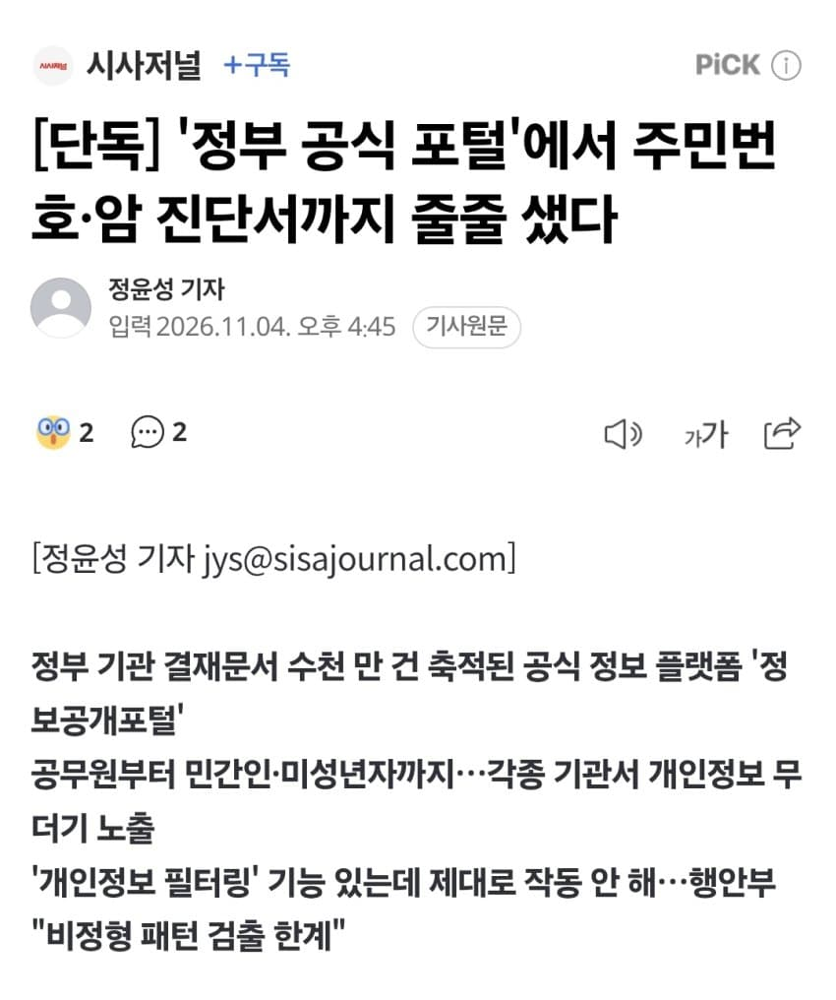
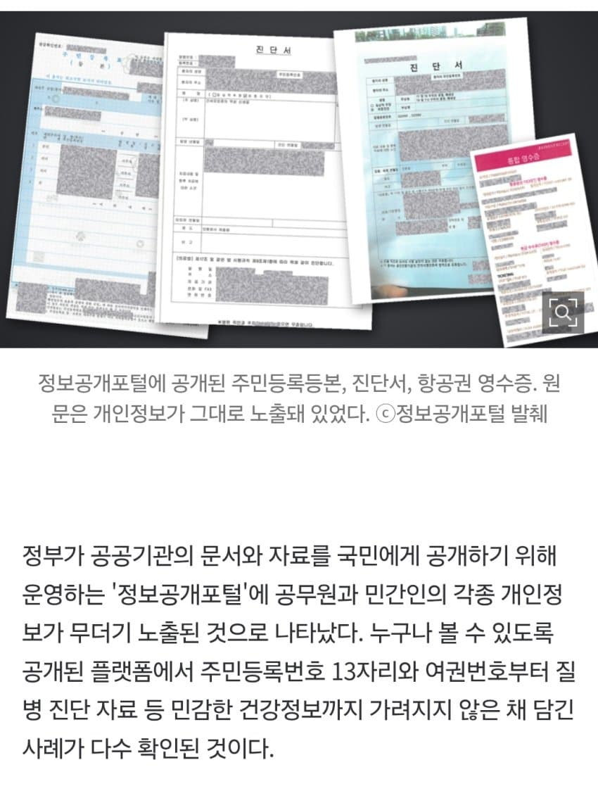
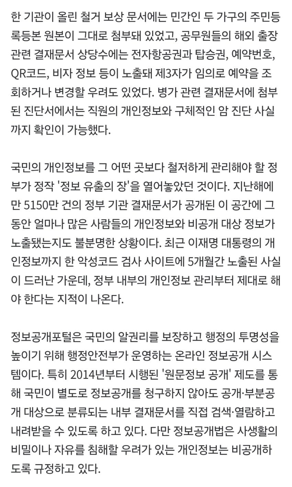
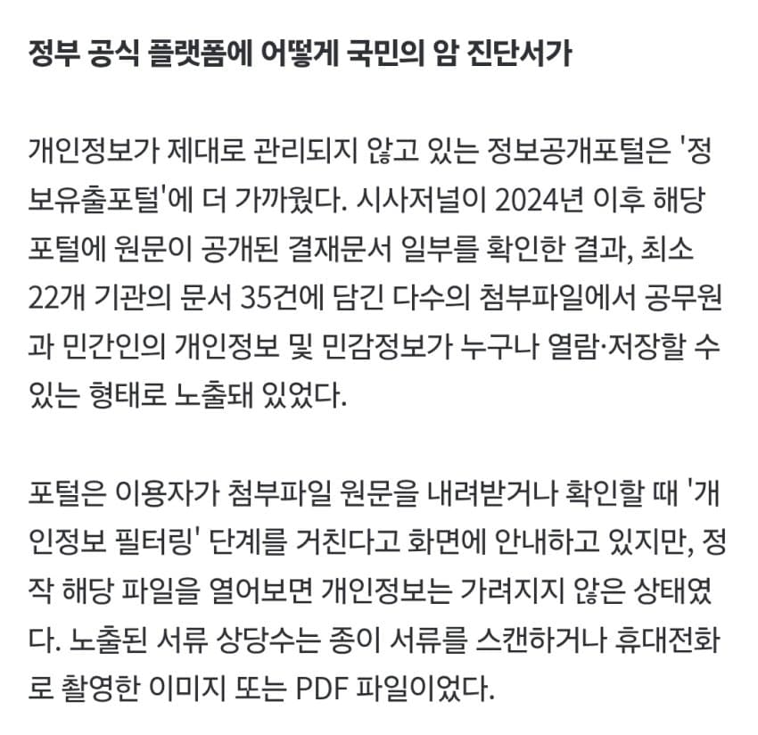
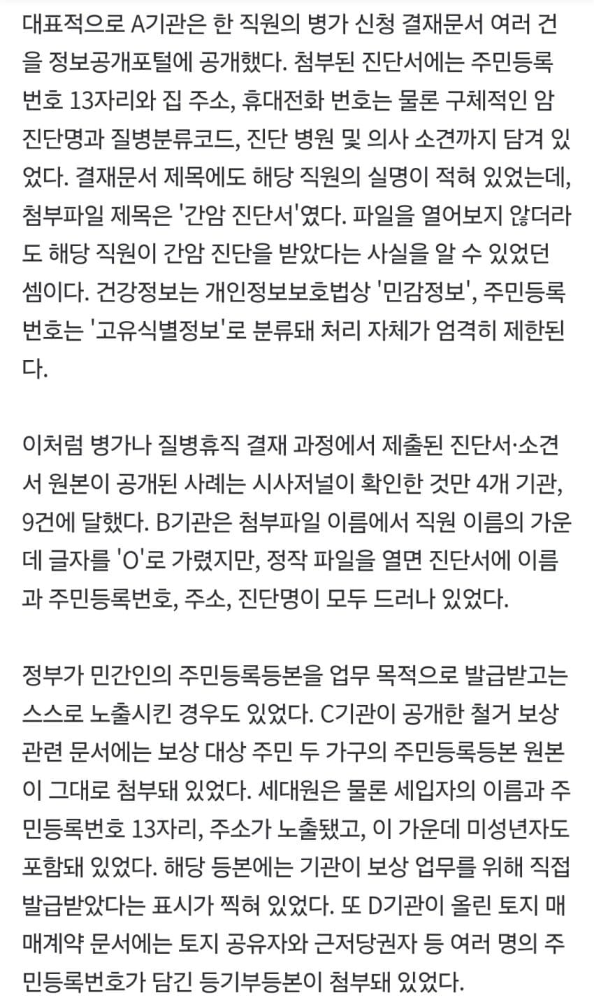
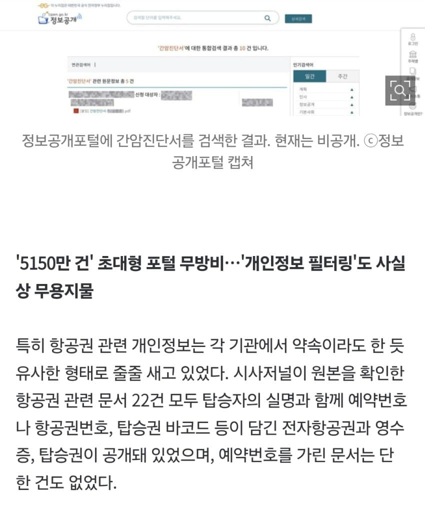
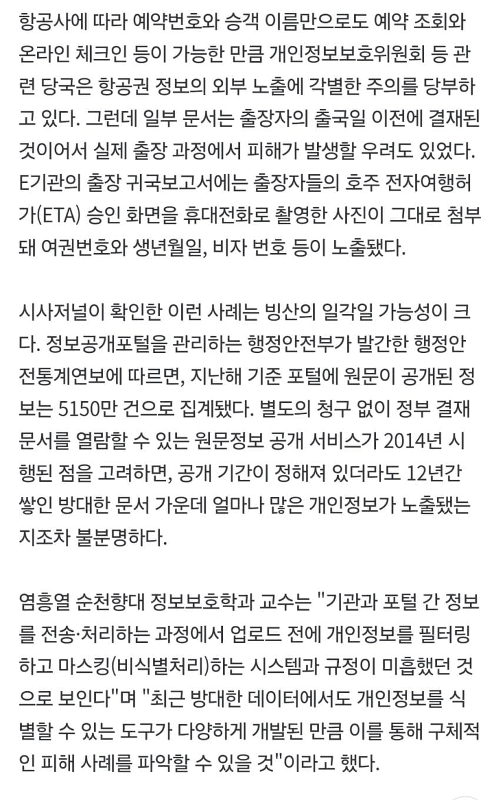
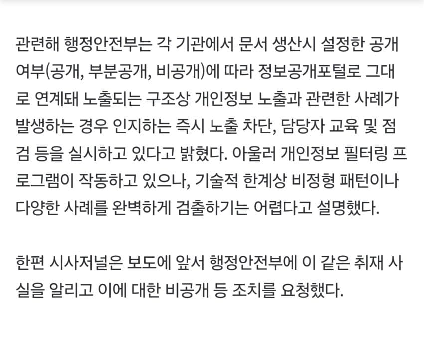

https://naver.me/FfsnQ9nj [단독] '정부 공식 포털'에서 주민번호·암 진단서까지 줄줄 샜다정부 기관 결재문서 수천 만 건 축적된 공식 정보 플랫폼 '정보공개포털' 공무원부터 민간인·미성년자까지…각종 기관서 개인정보 무더기 노출 '개인정보 필터링' 기능 있는데 제대로 작동 안 해…행안부 "비정형 패턴 검출naver.me출처: 중도보수 갤러리 [원본 보기]